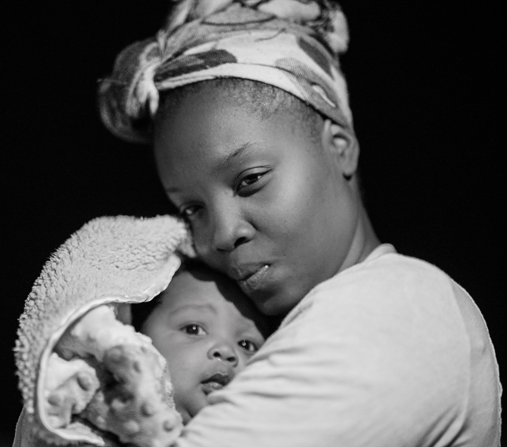
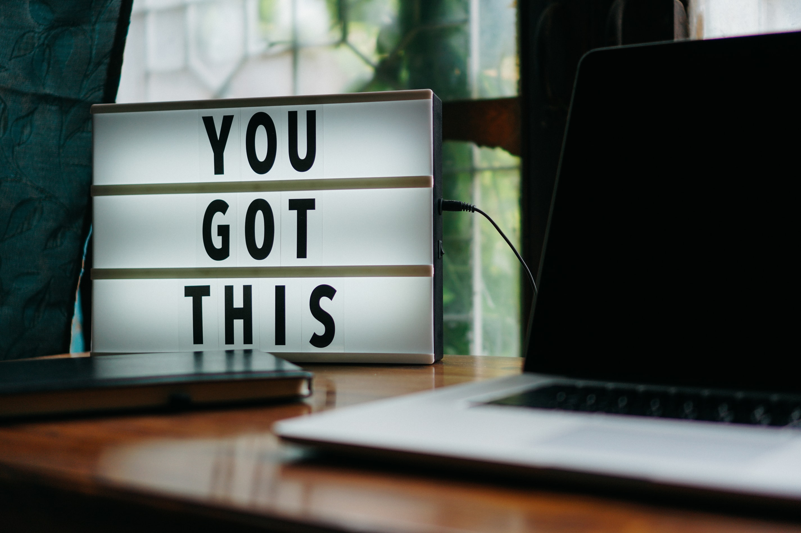
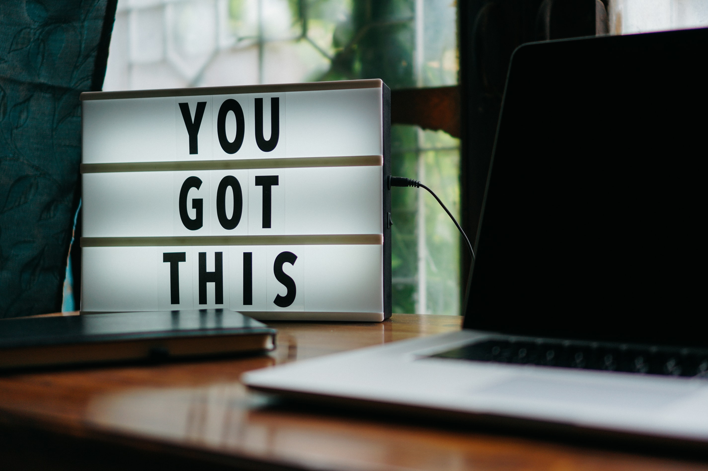

Motherhood
“You’re always going to wonder if you’re doing things wrong, but that’s what it means to be a mom, to care so much about someone else that you just want to be as perfect as possible.” —Naya Rivera
They say that the hardest job in the world is being a mother. We say, yes – this is completely true! However, being a mother is also the most rewarding job one could ever have.
All the way from conception to birth a transformation takes place inside of us – a kind of metamorphosis you could say. A part of you that you never knew existed, a kind of love that was never kindled before, now springs to life. Every day we learn and grow, we fail, we make mistakes and we cry, but most of all we love – unconditionally.
Motherhood isn’t always easy, it can be exhausting, difficult, tiring and more. In addition, there are social pressures that we deal with – the world trying to impose a blanket yet subjective standard on how children should be raised. We feel pain – when our children hurt, so do we. When they cry, we cry. But the beauty of motherhood is that we heal. There were no words to describe how I felt when my daughter recognised me for the first time. That giggle, that smile, that word of encouragement brings a sense of peace and warmth that is indescribable.
Libba Ray once said, “There is no greater power on this earth than story”.
Mother, Mum, Mummy, Ma – we are here to give you a voice. This is a space where many mothers will share their stories, triumphs and tribulations that they face during this lifelong journey we call motherhood. There is so much power in sharing and vocalising this beautiful journey that we are on. You are important, you are special and your story is important. Mother – we hear you.
Stay tuned to read the wonderful experiences of different mothers from all around the world.
 
